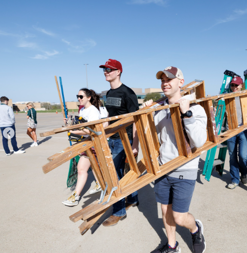

The Big Event

Texas A&M University's "The Big Event" is a monumental one-day student-run service project. It
started as a way to thank
Bryan and College Station locals for their unwavering support of the university and its
students. Joe Nussbaum
envisioned a time when students would work together, united in purpose, to complete a variety of
community service
projects. These projects, ranging from revitalizing neighborhood parks to assisting elderly
residents with home repairs,
frequently include yard work, painting, and other types of essential home maintenance, directly
impacting the lives of
homeowners who may need a helping hand.
Key Terms and Definitions
|